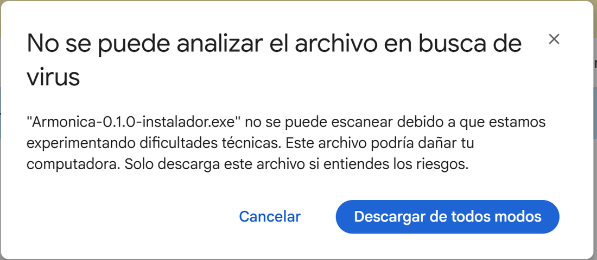
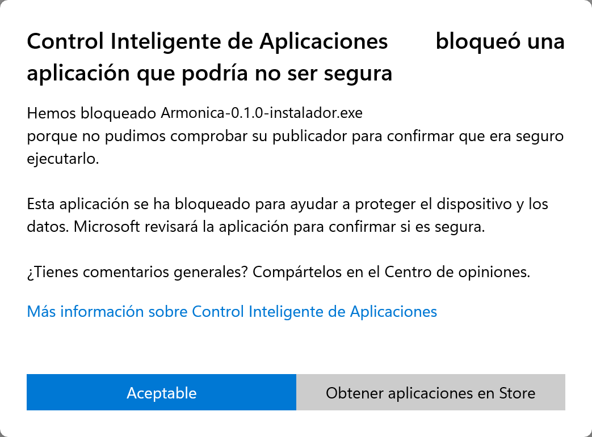
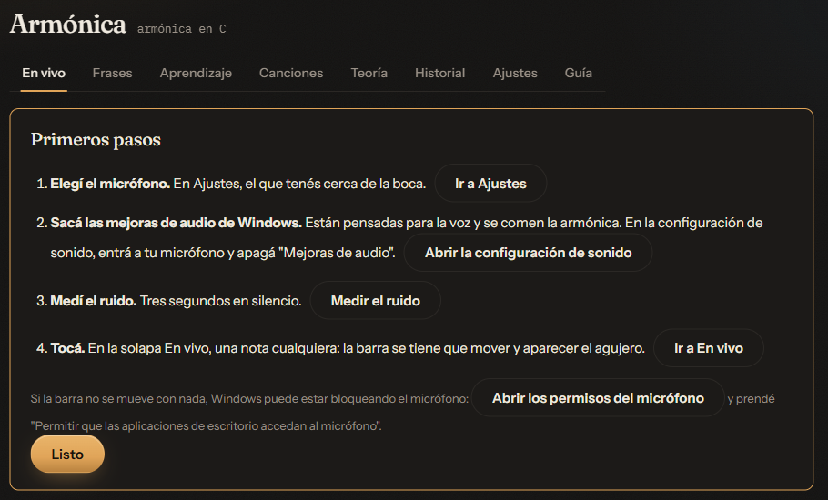
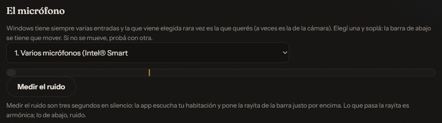
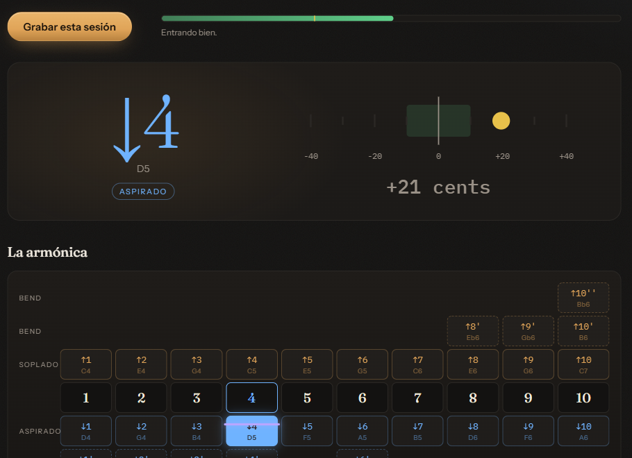
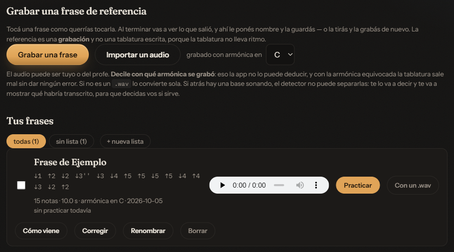
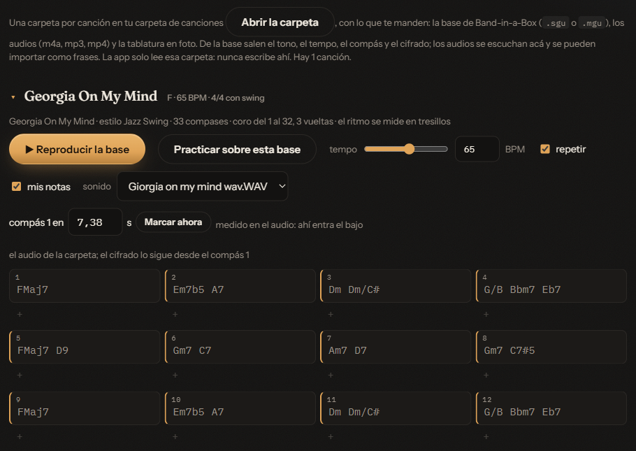
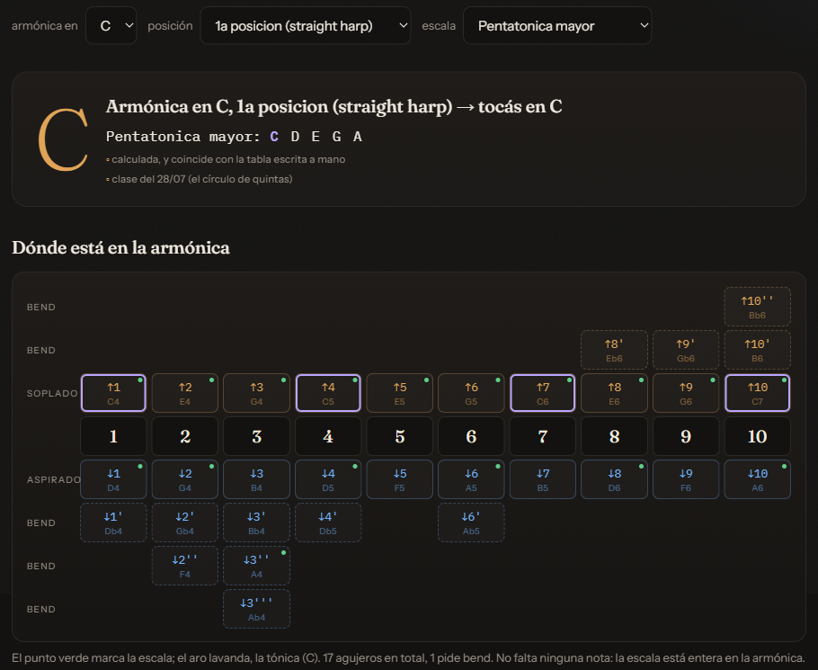
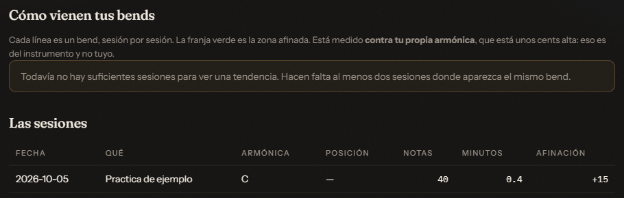
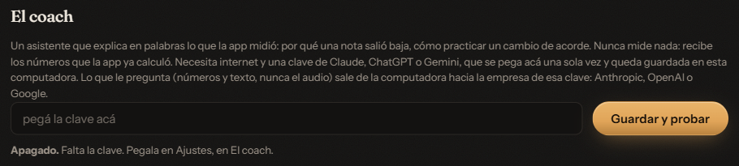

Guía de Armónica
Para abrir la app: el ícono Armónica del escritorio.
Esta guía cuenta para qué sirve cada parte de la app y cómo se usa. Lo que está en negrita es lo que ves escrito en la pantalla: un botón, una solapa o un título. La guía también está adentro de la app: es el enlace Guía de arriba, al lado de Ajustes.
Instalar
Cómo poner la app en tu computadora. Se hace una sola vez.
Bruno te pasa el instalador en un pendrive o por Google Drive. Es un solo archivo, y su nombre termina en «instalador».
Si te lo pasa en un pendrive
Enchufá el pendrive, abrilo y hacé doble clic en el instalador.
Si te lo pasa por Drive
Abrí el enlace que te mandó y descargá el archivo. Google avisa «No se puede analizar el archivo en busca de virus». Lo dice con los archivos grandes, que no alcanza a revisar: no quiere decir que tenga algo malo. Tocá Descargar de todos modos.

Cuando termine de bajar, abrí el archivo. Queda en la carpeta
Descargas.
Los avisos de Windows
Al abrirlo, Windows puede mostrar un cartel azul que dice «Windows protegió su PC». Sale con los programas que no son de una empresa conocida. Tocá Más información y después Ejecutar de todas formas.
Si en cambio el cartel dice «Control Inteligente de Aplicaciones bloqueó una aplicación…», no hay ningún botón para seguir. No cambies nada en la configuración de Windows: pedile a Bruno el instalador en un pendrive.

El instalador
Se instala solo para tu usuario de Windows, sin pedir permisos de administrador. Seguí sus pasos hasta el final. En la última pantalla queda tildado Abrir Armónica: si lo dejás así, la app se abre apenas termina.
Qué queda instalado
- El ícono Armónica en el escritorio.
- En el menú Inicio, Armónica y Guía de Armónica, que abre esta guía.
- En la carpeta
Documentos\Armonica, el ícono Abrir Armónica.
Armónica y Abrir Armónica hacen lo mismo: abren la app.
Tus frases, tus sesiones y los ajustes quedan en
Documentos\Armonica; ahí también ponés tus canciones y los
apuntes de las clases.
La primera vez
Dejar el micrófono listo, para que la app te escuche bien.
La primera vez que abrís la app, arriba de todo aparece la tarjeta Primeros pasos. Son cuatro, y cada uno tiene un botón que te lleva a donde se hace:
- Elegí el micrófono. Con Ir a Ajustes elegís el que tenés cerca de la boca.
- Sacá las mejoras de audio de Windows. Están pensadas para la voz y se comen la armónica. Abrir la configuración de sonido abre la de Windows: entrá a tu micrófono y apagá «Mejoras de audio».
- Medí el ruido. Tocá Medir el ruido y quedate tres segundos en silencio.
- Tocá. Con Ir a En vivo, tocá una nota cualquiera: la barra se tiene que mover y tiene que aparecer el agujero.
Cuando termines, tocá Listo. La tarjeta no vuelve a aparecer sola, pero la podés ver cuando quieras: Ajustes → Ver los primeros pasos.
Si la barra no se mueve con nada, puede ser que Windows esté bloqueando el micrófono. En la tarjeta, tocá Abrir los permisos del micrófono y prendé «Permitir que las aplicaciones de escritorio accedan al micrófono».

El micrófono, en Ajustes
En Ajustes, la parte El micrófono tiene la lista de las entradas de sonido de la computadora. Windows siempre tiene varias, y la que viene elegida rara vez es la buena (a veces es la de la cámara). Elegí una y soplá: la barra de abajo se tiene que mover. Si no se mueve, probá con otra.
Medir el ruido son tres segundos en silencio. La app escucha la habitación y pone una rayita en la barra, justo por encima del ruido. Lo que pasa la rayita es armónica; lo de abajo, ruido. Si cambiás de lugar o de micrófono, volvé a medirlo.

Con qué estás tocando
También en Ajustes, en Con qué estás tocando, le decís a la app qué armónica tenés en la mano (armónica en), en qué posición tocás y qué escala querés ver marcada. La app trabaja con armónicas en C, G, D y A. Lo que elegís se ve arriba de todo, al lado del nombre de la app.
En vivo
Ver lo que tocás mientras lo tocás: qué agujero, qué nota y si está afinada.
Mientras la app está abierta, te escucha. No hace falta apretar nada para ver lo que tocás: grabar es solo para guardarlo.
Qué muestra
- La barra, arriba a la derecha: se mueve con el sonido que entra. Es lo primero que hay que mirar si no anda nada. Si no se mueve al soplar, el problema es el micrófono y no cómo tocás. Abajo dice cómo está entrando: si va todo bien, dice «Entrando bien».
- El agujero que estás tocando, grande, escrito como en la tablatura: ↓4 es el 4 aspirado, ↑5 es el 5 soplado, y cada apóstrofe es un semitono de bend (↓3' es el 3 aspirado, bajado un semitono). Abajo van el nombre de la nota y si es soplado o aspirado. Al lado, una regla con un punto. Si el punto cae en la franja verde del medio, la nota está afinada; hacia la izquierda está baja, y hacia la derecha, alta. Los números de la regla son cents, centésimos de semitono.
- La armónica: el dibujo del instrumento, con los agujeros del 1 al 10 de izquierda a derecha. Arriba lo soplado, abajo lo aspirado, y los bends apilados hacia afuera. Se ilumina lo que estás tocando. El punto verde marca la escala que elegiste en Ajustes, y el aro lavanda, la tónica. La línea lavanda es tu afinación entre una nota y la de al lado: en un bend a medio hacer la vas a ver en el medio, y en verde cuando llegaste.
- Lo que tocaste: la tablatura de lo que venís tocando.

Grabar una sesión
Para guardar lo que tocás, tocá Grabar esta sesión. El botón se pone rojo y pasa a decir Terminar. Tocá, y cuando termines, apretalo.
Aparece Esto es lo que grabaste: la tablatura, cuántas notas y cuánto duró. Si querés, ponele un nombre y anotá qué estuviste practicando. Si tocaste sobre una base, escribí su BPM en base a y la app mide el ritmo; si no, dejalo vacío. Después elegí Guardar o Descartar.
Al guardar, abajo de todo aparece el Resumen de la sesión: cuántas notas tocaste y en cuánto tiempo, cuánto midió tu armónica, y lo que la app encontró, cada cosa con qué hacer. Si diste el BPM, también el Ritmo. Las sesiones guardadas se ven después en Historial.
Tocar sobre una base
En Canciones, el botón Practicar sobre esta base trae la base de esa canción a En vivo. Arriba aparece «Sobre la base:» con el nombre de la canción, ▶ Reproducir la base y Quitar la base. Mientras suena, la app dice en qué compás y sobre qué acorde estás, y marca en el dibujo de la armónica dónde están sus notas guía.
Si grabás con la base puesta, la base arranca con un compás de conteo, y el BPM ya lo sabe la app. En el resumen aparece Sobre la base: cuántas de tus notas eran del acorde, y cuántas veces aterrizaste en una nota guía en un cambio de acorde.
Usá auriculares. Si la base entra por el micrófono, la app no puede medir lo que tocás.
Frases
Guardar frases de referencia y practicarlas hasta que salgan igual.
Una frase de referencia es una grabación de una frase tocada como querés que suene. Puede ser tuya o de otra persona. Es una grabación y no una tablatura escrita, porque la tablatura no lleva el ritmo.
Grabar o importar una frase
Hay dos formas:
- Grabar una frase: tocá la frase. Mientras grabás aparece un cartel con un punto rojo, la barra y la tablatura que va saliendo. Cuando termines, tocá Terminar.
- Importar un audio: elegí un archivo de audio de la computadora, por ejemplo uno que te mandaron por WhatsApp. Antes, en grabado con armónica en, elegí con qué armónica se grabó (viene elegida la que tenés en Ajustes): la app no lo puede adivinar, y con la armónica equivocada la tablatura sale mal sin avisar.
Si el audio tiene varios pedazos con armónica (una clase entera, por ejemplo), la app los separa y dice cuántos encontró. Escuchá cada uno con ▶ y elegí el que querés con Este, o guardalos todos con Importar los … como frases: quedan en una lista con el nombre del archivo. Con un audio largo puede tardar un minuto. No toques nada hasta que aparezca el resultado.
Esto es lo que salió
Al terminar de grabar aparece Esto es lo que salió (al importar, Esto es lo que se importó), con la tablatura, cuántas notas y cuánto dura. Ponele un nombre, una descripción si querés, y elegí en qué lista va: ninguna, una de las tuyas o una nueva («nueva lista…»). Después, Guardar o Descartar.
Si atrás de la armónica hay una base sonando, la app no las puede separar: te avisa y te muestra lo que habría salido, para que decidas vos si sirve.
Tus frases
En Tus frases está cada frase con su tablatura, su audio para escuchar y sus botones:
- Practicar: para tocarla contra la referencia (ver abajo).
- Cómo viene: tus intentos con esa frase, en un gráfico y una tabla.
- Corregir: si la app anotó mal alguna nota, la cambiás a mano y tocás Guardar la corrección. Restaurar la original vuelve a lo que había anotado la app.
- Renombrar y Borrar.
Arriba están las listas: todas, cada una de tus listas y, si hay, sin lista. Tocá una para ver solo esas. + nueva lista crea una. Con una lista elegida, el mismo botón dice editar esta lista: sirve para cambiarle el nombre o para borrarla (las frases quedan, sin lista). Para pasar frases a una lista, marcá la casilla de cada una, elegí la lista en mandarlas a y tocá Mover.

Practicar una frase
Tocá Practicar en la frase, tocala igual que la referencia y, al terminar, tocá Terminar. Abajo aparece Cómo te salió:
- tres números: notas (cuántas acertaste), afinación y a tiempo;
- Qué hacer con esto: los consejos;
- Escuchalas seguidas: la referencia y tu intento, uno abajo del otro;
- Nota por nota: cada nota, con cuánto te adelantaste o te atrasaste y cuánto te desafinaste.
Arriba dice qué intento es y cómo te fue en el anterior. Si tenés tu
intento grabado en un .wav, en vez de tocarlo en vivo usá
Con un .wav, en la tarjeta de la frase.
Canciones
Tener cada canción con su base, sus audios y su tablatura, y practicar sobre la base.
La app viene sin canciones: las preparás vos. Cada canción es una carpeta
con su nombre, adentro de Documentos\Armonica\canciones. En la
solapa Canciones, Abrir la carpeta te la
abre. En la carpeta de cada canción va:
- la base de Band-in-a-Box, el archivo
.sguo.mgu. De ahí la app saca el tono, el tempo, el compás y el cifrado; - los audios: la base grabada, alguien tocando encima, una clase
(
.wav,.mp3,.m4a,.mp4…); - la tablatura en foto (
.jpg,.pngo las fotos del iPhone).
Con volver a la solapa alcanza: la canción aparece sola. La app solo lee esa carpeta: nunca escribe ni borra nada ahí.
Qué muestra de cada canción
Cada canción es un bloque que se abre y se cierra tocando su nombre. Al lado del nombre van el tono, el tempo y el compás; abajo, una línea con el título, el estilo, cuántos compases tiene y dónde está el coro.
- ▶ Reproducir la base la hace sonar, y ■ Parar la corta. Con tempo la tocás más lenta o más rápida, y repetir la vuelve a empezar cuando termina. Si el archivo trae la melodía, la casilla melodía la suma.
- Sin un audio, la app toca la base ella misma a partir del cifrado: acordes, bajo y un click. No suena a banda, pero se escuchan el acorde y el pulso. Si en la carpeta hay audios, en sonido elegís cuál es la base, y el cifrado la sigue desde el compás 1. Si el compás 1 no cae donde tiene que caer, poné a sonar el audio y tocá Marcar ahora justo cuando arranca.
- Practicar sobre esta base te lleva a En vivo con la base puesta (ver En vivo).
- El cifrado, como en un atril: cuatro compases por renglón, con los cambios de acorde marcados. Mientras suena la base, se ilumina el compás. Si pasás el mouse por un acorde, dice sus notas y sus notas guía.
- Abajo de cada compás hay una casilla, con un «+», para escribir dónde
querés aterrizar: el agujero, como
-4,5o-3'(con bend). Enter lo guarda, y la tecla Tab pasa al compás siguiente. La app lo pinta según el acorde: las notas guía, en cobre. La casilla mis notas muestra o esconde lo que escribiste. - Tablatura y apuntes en foto: las fotos de la carpeta. Ver en otra ventana la abre en una ventana chica, para tenerla al costado mientras tocás.
- Audios: cada audio se escucha ahí mismo. Importar como frases lo lleva a Frases, que busca los pedazos con armónica.

Preparar una canción en Band-in-a-Box
Estos son los pasos para guardar la base y su audio desde Band-in-a-Box.
Aprendizaje
Leer los resúmenes de las clases y buscar en ellos.
La solapa lee los resúmenes que dejes en
Documentos\Armonica\apuntes. En Ajustes, en
Los apuntes de las clases, Abrir la
carpeta te la abre. Sirven archivos de Word (.docx),
PDF (.pdf) y de texto (.txt y
.md).
Empezá el nombre de cada archivo con la fecha de la clase, año-mes-día:
por ejemplo, 2026-09-08.docx. Así la app sabe de cuándo es y
las ordena.
Qué muestra:
- Arriba, un casillero para buscar en las clases: escribí una palabra (bending, notas guía, tercera posición…) y aparecen las clases que la nombran, con la fecha.
- Qué estamos viendo: lo principal de la última clase.
- Qué tengo que practicar: lo que las últimas clases dejaron para practicar. Cada cosa trae un botón que te lleva a la solapa donde se practica. Es una orientación: la app la saca de las palabras del resumen.
- Las clases: todas, con su fecha y su tema. Tocá una para leerla entera.
La app solo lee esa carpeta: nunca escribe ni cambia tus archivos.
Teoría
Estudiar una posición: qué escala, dónde está en la armónica y qué notas buscar sobre cada acorde.
Arriba elegís armónica en, posición y escala. Esto es para mirar: no cambia lo que tenés puesto en Ajustes, así que podés estudiar una posición mientras tocás en otra. Algunas posiciones dicen «solo calculada»: la app las saca de la cuenta, sin una tabla escrita a mano para comparar.
Abajo, para lo que elegiste:
- el tono en que tocás y las notas de la escala, con la tónica marcada;
- Dónde está en la armónica: el dibujo, con el punto verde en las notas de la escala y el aro lavanda en la tónica. Dice cuántas notas piden bend y si falta alguna;
- La corrida: la escala en orden, dos octavas desde la tónica. Las que están punteadas piden bend;
- El blues de doce compases en esta posición, con los cambios de acorde marcados: ahí es donde conviene aterrizar en una nota guía, en el tiempo 1;
- Las notas guía: la 3ª y la 7ª de cada acorde, y en qué agujero está cada una;
- Qué evitar: los agujeros que chocan con cada acorde;
- En qué posición conviene esta escala: las posiciones, de la más cómoda a la menos.
El círculo de quintas
Al final está El círculo de quintas. Cada posición es un paso de quinta desde la armónica, por eso la misma rueda sirve para todas. Tiene dos modos:
- Tono de la armónica: elegí la armónica en las teclas de las notas, y la rueda dice en qué tono tocás en cada posición.
- Tono de la canción: elegí el tono de la canción, y la rueda dice qué armónica pide cada posición. Las armónicas con las que trabaja la app (C, G, D y A) llevan una ✓.
Tocá un sector de la rueda y esa posición se abre arriba.

Historial
Ver cómo venís de una sesión a otra.
Acá están las sesiones que guardaste en En vivo, con Grabar esta sesión y Guardar.
Cómo vienen tus bends
Un gráfico por cada bend, sesión por sesión. La franja verde es la zona afinada: un punto verde está afinado, uno amarillo, cerca, y uno rojo, lejos. Arriba de cada gráfico dice si venís mejorando, empeorando o sin cambios.
Está medido contra tu propia armónica: si el instrumento está unos cents alto, eso es de la armónica y no tuyo. Un bend aparece cuando está en dos sesiones o más, y para hablar de una tendencia hacen falta tres.
Las sesiones
Una tabla con cada sesión guardada: la fecha, el nombre que le pusiste, la armónica, la posición, cuántas notas, cuántos minutos y cuánto midió la afinación de tu armónica.

El coach
Un asistente que te explica en palabras lo que la app midió.
Por ejemplo, por qué una nota salió baja o cómo practicar un cambio de acorde. El coach nunca mide nada: recibe los números que la app ya calculó y los cuenta en palabras. Es opcional: sin él, la app anda entera.
Necesita internet y una clave de Claude, de ChatGPT o de Gemini, que son asistentes de tres empresas distintas. La clave es un código largo que da cada empresa: con ella, la app le puede hacer preguntas a ese asistente.
Qué clave usar
- Si Bruno te da una, usá esa.
- Si querés sacar la tuya, Gemini, de Google, es gratis,
con un tope de consultas por día. Se saca en
aistudio.google.com, con tu cuenta de Google. Ojo: en la versión gratis, Google puede usar lo que le mandás para mejorar sus productos. - ChatGPT, de OpenAI (en
platform.openai.com), y Claude, de Anthropic (enconsole.anthropic.com), se pagan por uso: unos centavos por consulta. La suscripción a ChatGPT Plus o a Claude no trae la clave: la clave es aparte.
En esos sitios, la clave se llama «API key». Si no sabés cómo sacarla, pedile una mano a Bruno.
Dónde se pega
En Ajustes → El coach: pegá la clave en el casillero que dice «pegá la clave acá» y tocá Guardar y probar. La app reconoce sola si es de Claude, de ChatGPT o de Gemini, la guarda en esta computadora y la prueba. Se pega una sola vez.
Lo que puede contestar:
- «Listo: es una clave de Gemini y anda. Ya podés usar el coach.» (con el nombre que corresponda). Abajo dice Activo, con Gemini. Ya está.
- «Esa clave de Gemini no es válida, así que no la guardé. Fijate de haberla copiado entera.» La empresa no la aceptó. Copiala de nuevo, entera, y volvé a probar. Si había una clave de antes, sigue esa.
- «No reconozco esa clave. Sirven las de Claude, ChatGPT o Gemini: pegala de nuevo, entera y sin espacios.»
- «La clave de Gemini quedó guardada, pero al probarla: …» (con el nombre que corresponda), y después el motivo. La clave quedó, pero no se pudo probar: puede ser que no haya internet, que el servicio esté saturado o que la cuenta no tenga crédito. Abajo dice «Guardada, sin comprobar todavía: arriba dice por qué no se pudo probar». El motivo es esa línea de arriba.

Qué sale de la computadora
Para contestar, la app le manda al asistente números y texto: lo que midió, tu pregunta y, en Canciones, el cifrado. El audio nunca sale de la computadora. Todo eso va a la empresa de la clave: a Anthropic si es de Claude, a OpenAI si es de ChatGPT y a Google si es de Gemini.
Dónde aparece
Con el coach activo aparecen sus botones:
- en Frases, al pie de Cómo te salió: Que me lo explique el coach;
- en Teoría: Preguntale al coach, para escribir una pregunta sobre lo que está en pantalla y tocar Preguntar;
- en Canciones, en cada canción: Que el coach explique la base. Lo que dice queda guardado con la canción.
Mientras piensa, el botón dice «Pensando...». Puede tardar unos segundos.
Sin internet, el coach contesta «No hay conexión con el servicio. ¿Estás sin internet?». Si dice «El servicio está saturado, o la clave llegó a su tope de uso. Probá en un rato.», probá más tarde: con Gemini gratis, puede ser el tope del día.
Borrar la clave
En Ajustes → El coach, Borrar la clave. Pregunta antes de borrarla. Después, el coach queda apagado hasta que pegues otra.
Cerrar la app
Cómo se cierra del todo y cómo se vuelve a abrir.
La app se ve en el navegador, pero cerrar la pestaña no la cierra: sigue abierta por detrás, y al minuto suelta el micrófono.
Para cerrarla del todo: Ajustes → Cerrar la app. Te pregunta antes, y la página queda diciendo «La app está cerrada». Mientras estás grabando no se cierra: primero pará la grabación.
Para volver a abrirla, el ícono Armónica del escritorio. Si la app ya estaba abierta (por ejemplo, porque cerraste la pestaña), tocar el ícono no abre otra: solo vuelve a abrir la página.
Si algo no anda
Qué hacer con los problemas más comunes.
La barra no se mueve
- En Ajustes → El micrófono, elegí otro y soplá. Probá con todos los de la lista.
- Apagá las «Mejoras de audio» de Windows: Ajustes → Ver los primeros pasos → Abrir la configuración de sonido, entrá a tu micrófono y apagalas.
- Revisá los permisos del micrófono: en la misma tarjeta, Abrir los permisos del micrófono, y prendé «Permitir que las aplicaciones de escritorio accedan al micrófono».
Si la barra se mueve pero la app no reconoce las notas, volvé a Medir el ruido.
Un audio no se convierte
Si al importar un audio la app dice «Windows no lo dejó correr», Windows
bloqueó el convertidor de audio que trae la app. Probá con el audio en
.wav, que no necesita conversión (Bruno te puede ayudar a
pasarlo). Todo lo demás sigue andando: grabar, En vivo, las frases, las
fotos y los .wav.
«Armónica ya se está abriendo pero todavía no contesta»
Ese cartel sale si tocás el ícono mientras la app todavía está arrancando. Esperá un momento y volvé a tocar el ícono.
El coach dice que hace falta una versión nueva
Las empresas cambian sus asistentes cada tanto, y la app no se actualiza sola. Pedile a Bruno una versión nueva (ver Una versión nueva).
Cualquier otra cosa
Mandale a Bruno el archivo registro.txt, que está en
Documentos\Armonica, y contale qué estabas haciendo. Ahí la app
anota lo que pasó. Lo mismo si al abrirla sale «La app no pudo
arrancar».
Una versión nueva
Cómo poner la versión nueva que te pase Bruno, y cómo sacar la app.
Qué versión tenés lo dice Ajustes, en La app.
Instalar la nueva
Se instala encima, igual que la primera vez, con los mismos avisos (ver Instalar). Si la app está abierta, el instalador la cierra solo. Si estás grabando, te pide que pares la grabación, cierres la app desde Ajustes y vuelvas a abrir el instalador.
Tus frases, sesiones, canciones, apuntes y ajustes no se tocan, y la clave del coach tampoco.
Desinstalar
En la Configuración de Windows → Aplicaciones,
buscá Armónica y elegí Desinstalar. La
carpeta Documentos\Armonica queda entera, con todo lo tuyo. La
clave del coach sí se borra: si volvés a instalar la app, la tenés que
pegar de nuevo.